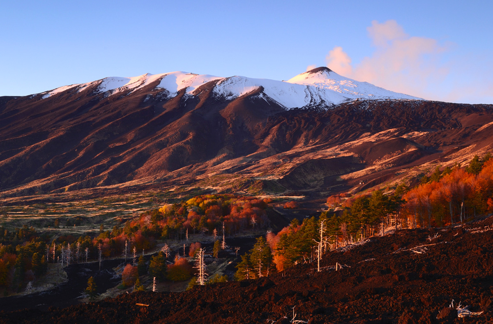
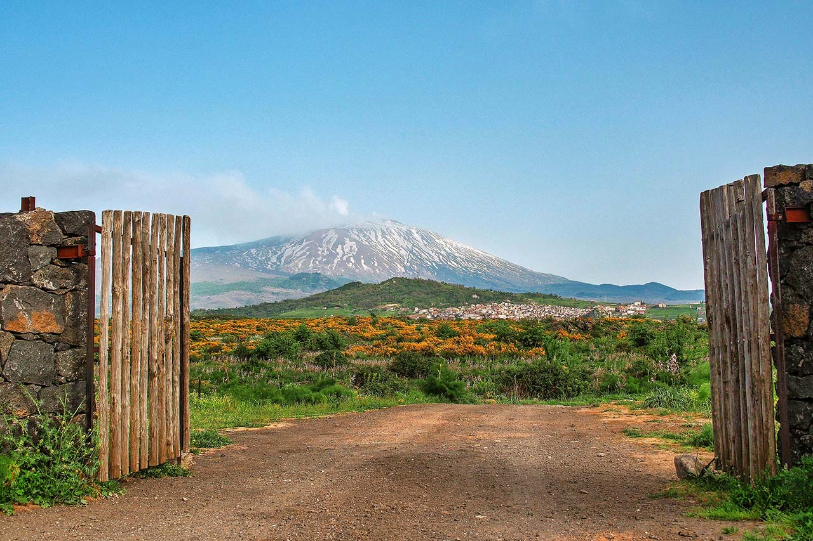

Parco dell’Etna
Il vulcano attivo più alto d’Europa, con paesaggi unici, crateri spettacolari e biodiversità vulcanica.
Il Parco dell’Etna, istituito nel 1987, si estende su oltre 59.000 ettari nella Sicilia orientale e circonda l’Etna, il vulcano attivo più alto d’Europa. Questo straordinario paesaggio naturale, plasmato da millenni di attività vulcanica, offre una combinazione unica di biodiversità, cultura e avventura. L’Etna, con i suoi crateri fumanti e le colate laviche, è il cuore pulsante di questo parco che rappresenta uno dei luoghi più affascinanti del Mediterraneo.
Paesaggi vulcanici e contrasti naturali
Il Parco dell’Etna è un museo a cielo aperto di paesaggi vulcanici. Il vulcano, con i suoi oltre 3.300 metri di altezza, domina l’intera Sicilia orientale. La sua attività vulcanica ha creato un territorio unico, caratterizzato da crateri fumanti, colate laviche nere e deserti di lava. Crateri iconici come il Cratere Centrale e i Crateri Silvestri, situati sul versante sud, sono tra le mete più visitate, offrendo un panorama mozzafiato e la possibilità di camminare su terreni modellati dalle eruzioni più recenti.

Fauna emblematica
Nonostante l’aspetto aspro del territorio, il Parco dell’Etna ospita una sorprendente biodiversità. La fauna è composta da numerose specie adattatesi alle condizioni uniche del vulcano. Tra gli animali più comuni ci sono le volpi, i conigli selvatici e i ricci. Il parco è anche un luogo privilegiato per l’osservazione degli uccelli, con specie come il falco pellegrino, l’allocco e l’aquila del Bonelli.

Attività per i visitatori
Il Parco dell’Etna è una destinazione perfetta per chi ama la natura e l’avventura. Una delle esperienze più popolari è l’escursione verso i crateri sommitali. I sentieri escursionistici si estendono lungo tutte le fasce altitudinali del parco. Tra i più suggestivi c’è quello che porta alla Valle del Bove, una vasta depressione vulcanica che racconta la storia delle eruzioni passate.
Le grotte vulcaniche sono un’altra attrazione imperdibile del parco. Formatesi dal raffreddamento della lava, queste grotte rappresentano un mondo nascosto e affascinante. La Grotta del Gelo, famosa per contenere ghiaccio perenne, e la Grotta dei Lamponi, con le sue spettacolari formazioni, sono due delle più visitate.
In inverno, l’Etna diventa una stazione sciistica dove è possibile sciare con una vista unica sul mare. Nei mesi più caldi, il parco è ideale per passeggiate a cavallo, escursioni in mountain bike e degustazioni enogastronomiche.

Un patrimonio storico e culturale
Oltre alla sua straordinaria bellezza naturale, il Parco dell’Etna è profondamente radicato nella cultura siciliana. I borghi che circondano il vulcano, come Nicolosi, Zafferana Etnea e Linguaglossa, sono ricchi di storia e tradizioni. Qui si possono scoprire antiche chiese, monasteri e musei che raccontano la lunga relazione tra l’uomo e il vulcano. Feste popolari, come la Sagra del Miele di Zafferana, celebrano i prodotti tipici e il legame indissolubile tra la comunità locale e il territorio.

Conservazione e sostenibilità
Nel 2013, il Parco dell’Etna è stato inserito nella lista dei Patrimoni dell’Umanità UNESCO, un riconoscimento che ne sottolinea l’importanza ambientale, culturale e scientifica. La gestione del parco mira a proteggere la biodiversità e a garantire uno sviluppo sostenibile. Le attività turistiche sono regolamentate per ridurre l’impatto ambientale, assicurando che l’Etna rimanga una risorsa preziosa per le generazioni future.

Come visitare il Parco dell’Etna
Il Parco dell’Etna è facilmente raggiungibile da Catania e Taormina, con accessi principali come il Rifugio Sapienza sul versante sud e Piano Provenzana sul versante nord. Questi punti offrono servizi turistici, tra cui funivie, rifugi e centri visita. Per un’esperienza completa, è consigliabile visitare il parco in primavera o autunno, quando il clima è più mite e i paesaggi sono particolarmente suggestivi. Tuttavia, ogni stagione ha il suo fascino: in inverno, il vulcano si veste di bianco, mentre in estate offre un contrasto unico tra il nero della lava e il blu del cielo.
Con i suoi paesaggi vulcanici, la biodiversità unica e il ricco patrimonio culturale, il Parco dell’Etna è un luogo dove natura e storia si incontrano in modo spettacolare. È una destinazione imperdibile per chiunque voglia esplorare il cuore pulsante della Sicilia.